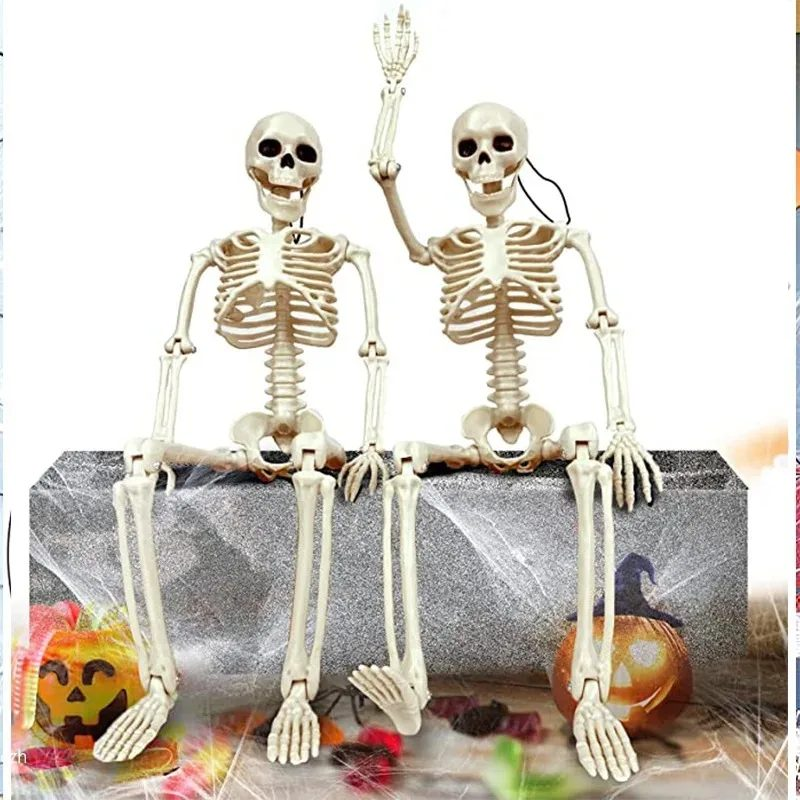

El invitado del sofá (relato de terror: el esqueleto que cambiaba de sitio)

*Relato 2 de la serie "Historias para Halloween". El vídeo está en nuestro TikTok e Instagram. Aquí, la historia entera.*
El invitado del sofá
Eran cuatro en el piso. Lo compraron en septiembre, de broma, para la fiesta de Halloween: un esqueleto de tamaño real, con los brazos y las piernas articulados y la mandíbula que se abre. Lo sentaron en el sofá con el mando de la tele en la mano y le hicieron una foto. Se rieron mucho.
La primera mañana, el esqueleto estaba en la silla de la cocina. Con las manos sobre la mesa, como esperando el desayuno. Todos dijeron que había sido otro. Nadie lo había movido.
La segunda mañana estaba asomado a la ventana del salón, con una mano apoyada en el cristal. Desde la calle, un vecino les preguntó si estaban bien.
La tercera mañana lo encontraron en el pasillo, de pie, mirando hacia la habitación del fondo. Marta, que dormía allí, dejó de reírse. Esa noche cerró con llave.
Dejaron de moverlo. Dejaron de tocarlo. Dejaron de hablar de él. Y él siguió cambiando.
La última mañana antes de la fiesta, el esqueleto estaba sentado en la silla de la entrada. De cara a la puerta. Con la mandíbula abierta. Como si esperara a alguien.
A las nueve de la noche llamaron al timbre.
Ninguno de los cuatro había invitado a nadie todavía.
Cómo montar esta escena en tu casa
Es el clásico que nunca falla y el que más fotos genera en una fiesta: el esqueleto "vivo" que aparece donde nadie lo espera. Hace falta:
- Un esqueleto articulado de tamaño real: brazos, piernas y mandíbula móviles, para que se siente, se cuelgue o se apoye. Cada rincón de la casa es una pose nueva. Antes de la fiesta, cámbialo de sitio cada día y manda la foto al grupo: la historia se cuenta sola.
- Velas LED alrededor de la silla de la entrada la noche de la fiesta, para que quien llegue lo vea de frente al abrir la puerta.
- Telaraña blanca con arañas sobre los hombros y el respaldo, como si llevara ahí semanas.
Truco: la pose que más miedo da es la más humana. Sentado, con las manos en las rodillas, mirando a la puerta. Nada de brazos levantados.
Y si alguien pregunta quién lo ha movido, la respuesta es siempre la misma: nadie.